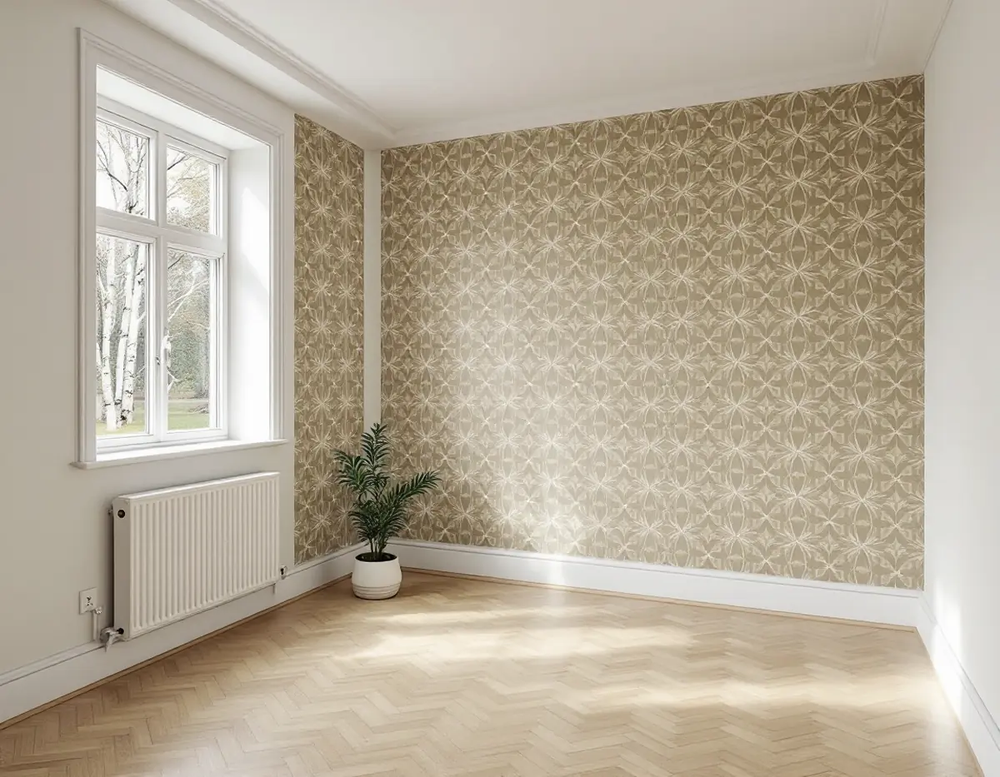
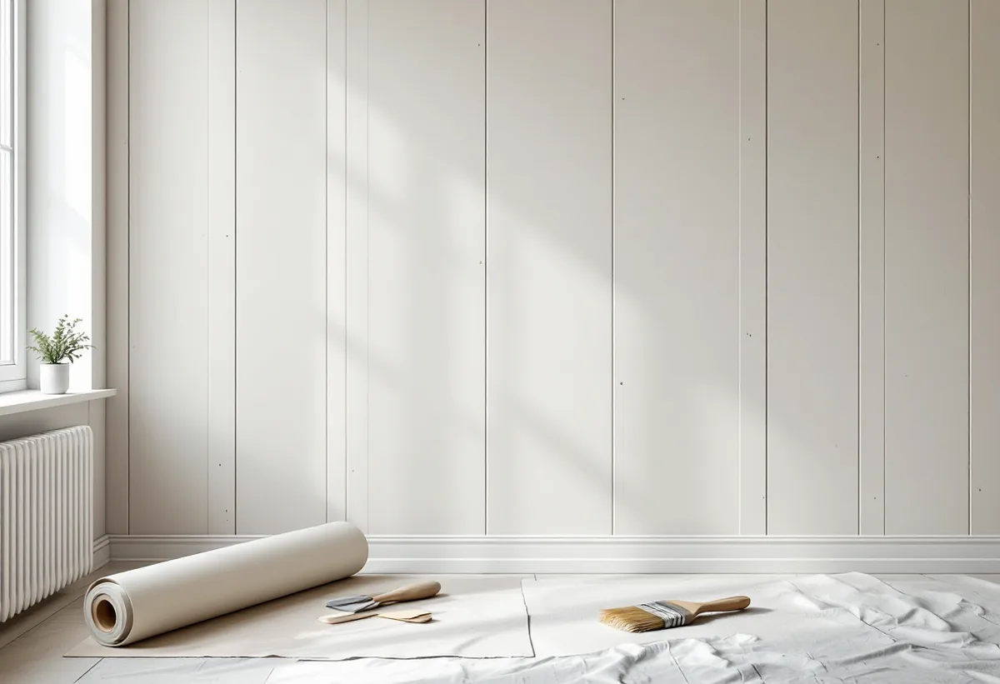

Platsbesök
Vi ser vilket skivmaterial väggen har och hur de gamla lagren sitter.
Ett radhus eller kedjehus i Jakobsberg från tiden kring 1960 kan ha haft flera ägare och flera omgångar tapet. Under dem kan det sitta skivor av olika slag, och ibland spår av gamla installationer. Geal Entreprenad AB tapetserar i radhus, villor och bostadsrätter i Järfälla och börjar med att se vad väggen är gjord av.

Järfällas kulturmiljöplan beskriver flera småhusområden i Jakobsberg. Kring Skogsvägen och Toppvägen exploaterades marken i början av 1960-talet. Flera byggfirmor byggde där, vilket gav en varierad utformning: tvåvåningsradhus utmed Vretstigen och Toppvägens norra del, kedjehus på resten. Fasaderna är träpanel, ofta av locklisttyp, och taken har rött lertegel. Kedjehusen förbinds med varandra genom garage, medan radhusens garage står två och två mot gatan. Planen citerar bedömningen att området ger en god bild av det tidiga 1960-talets småhusbyggande.
Ekedalsområdet började bebyggas 1958, med radhuslängor i två våningar i den låglänta delen och friliggande villor, klara i mitten av 1960-talet, högre upp. Där finns också envåningsradhus med inredd vind och souterrängplan. Husen är spritputsade och färgskalan var från början grå, beige och gul.
Planen handlar om husens yttre. Hur väggarna ser ut inomhus varierar från hus till hus, särskilt efter renoveringar.

I Svenska Byggnadsvårdsföreningens frågespalt beskriver en husägare att OSB-skivor inte rekommenderas som direkt underlag för tapet, eftersom tapetlimmet kan lösa upp bindemedlet och skivorna rör sig så att tapeten spricker. Skivorna satt på timmerväggar, och hen ville spänna papp över dem och sätta non-woven på pappen. Föreningen svarade att det kan bli problem: med non-woven klistrar man våderna och inte underlaget, och det blir svårt att sätta dem kant i kant på papp som reagerar på limmet.
Föreningens alternativ är att grunda skivorna med grundfärg och tapetsera på dem. Skarvarna kan då behöva spacklas, och ordningen blir att väggen grundas, skarvarna spacklas och spacklingen förlimmas innan tapeten sätts upp.
En annan fråga gällde gamla spånskivor på timmerväggarna i en 1800-talsgård, så porösa att de smulade sönder. Föreningen skriver att det kan vara ett tecken på att konstruktionen har varit uppfuktad i perioder. Hittar vi sådana skivor tittar vi på orsaken innan vi lägger något nytt ovanpå.
En annan frågeställare hade 70-talstapeter i sovrummet som började släppa i kanterna. Mitt på en vägg fanns en ojämnhet där tidigare hantverkare noga lappat över något med mindre tapetbitar. Under lapparna satt fyra kablar, som frågeställaren trodde var högtalar- eller signalkabel, avskurna i båda ändar och fästa med små stift.
Därför går vi försiktigt fram när vi tar ner lager i ett hus där det tidigare dragits ledningar på väggen. Hittar vi gamla kablar låter vi dem vara och tar inte bort eller kopplar något, eftersom ledningar är en sak för en elektriker. Tapeten sätts upp först när väggen är jämn. Ska huset målas utvändigt finns mer under målare i Järfälla.
Vi knackar och trycker på väggen för att höra om den är av skiva, gips eller något annat, och lyfter en kant för att se underlaget. Vi letar efter skarvar som syns genom tapeten, partier som ger efter och spår av gamla installationer. Utifrån det föreslår vi grundning, spackling eller papp och vilken typ av tapet som passar. Ska bara en fondvägg få ny tapet kan underarbetet begränsas till den väggen. Vi går också igenom hur möbler och golv skyddas och i vilken ordning rummen tas.
Vi ser vilket skivmaterial väggen har och hur de gamla lagren sitter.
Grundning, spackling av skarvar eller papp – vi går igenom vad som passar.
Nedtagning, underarbete och tapetsering står var för sig.
Gamla lager tas ner, skarvar spacklas och spacklingen förlimmas.
Tapeten sätts upp kant i kant eller med passning efter mönstret.
Vi går igenom rummet med dig och lämnar överbliven tapet.
Skatteverket räknar tapetsering som rotarbete i småhus, bostadsrätt och ägarlägenhet. Äger du radhuset ska arbetet göras i bostaden du äger; är det en bostadsrätt gäller avdraget arbete innanför bostadens tak, väggar och golv.
Företaget får dra av högst 30 procent av arbetskostnaden. Rotavdraget kan bli högst 50 000 kr per person och år, och högst 75 000 kr om rutavdrag räknas in. Tapet, papp, klister och resor ger inget avdrag. Geal drar avdraget direkt på fakturan.
Vilket skivmaterial väggen har, hur mycket som ska spacklas och hur många lager som ska ner påverkar mest. Efter ett gratis platsbesök får du ett skriftligt kostnadsförslag.
Fasad, fönster och invändig målning.
Målare i Stockholm →Takbyte, takbesiktning och plåtarbeten.
Takläggare i Järfälla →Jakobsberg, Viksjö och Kallhäll.
Takrenovering i Järfälla →Förråd, garage och ateljé som blir bostad.
Attefallshus i Järfälla →Planbesked, extra bostad och ansvar.
Byggföretag i Järfälla →Underhållsmålning i rätt tid.
Fasadmålning i Järfälla →Kedjehus, sekelskiftesvillor och parstuga i Stäket.
Fasadrenovering i Järfälla →Bruksvillor, radhus och 70-talsfönster i Järfälla.
Fönsterbyte i Järfälla →Bottenstycken, bleck och vita omfattningar.
Fönsterrenovering i Järfälla →Kedjehus, egnahem och gamla golvskikt.
Golvläggare i Järfälla →Slipa och behandla trappan i huset.
Golvslipning i Järfälla →Kedjehus, radhus och souterräng.
Köksrenovering i Järfälla →Stuprör, skärmtak och plåttak i Järfälla.
Plåtslagare i Järfälla →Förgårdar, förråd och ytterdörrar.
Snickare i Järfälla →Lovfritt takbyte och papperen du sparar.
Takbyte i Järfälla →Radhus, kedjehus och souterränghus.
Badrumsrenovering i Järfälla →Putsade radhus, kedjehus och villor i Järfälla.
Målare i Järfälla →Flytta badet och mät radon.
Totalrenovering i Järfälla →